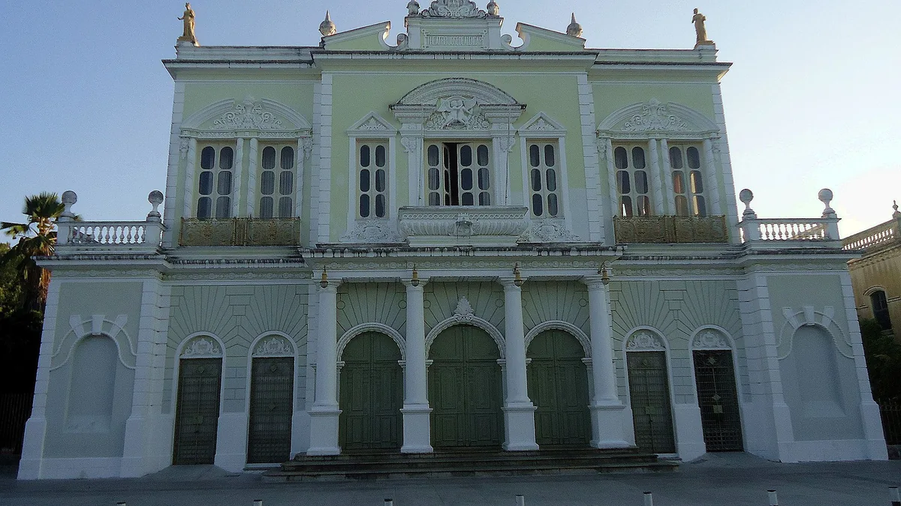

01
Theatro José de Alencar
Teatro históricoR$ 10
visita guiada; meia a R$ 5

Foto: GLandovsky · CC BY-SA 4.0 · Wikimedia Commons · recortada
Valor da entrada
Apurado em 17/set/2026.
R$ 10 a inteira e R$ 5 a meia. Criança até 5 anos e pessoa acima de 60 não pagam.
É o ingresso mais barato deste guia, e dá acesso guiado a seis espaços cênicos, ao prédio de 1910 e aos jardins.
R$ 10 a inteira e R$ 5 a meia. Criança até 5 anos e pessoa acima de 60 não pagam.
É o ingresso mais barato deste guia, e dá acesso guiado a seis espaços cênicos, ao prédio de 1910 e aos jardins.
Dias em que não funciona
Fecha às segundas. Abre de terça a sábado das 8h às 18h e domingo só de manhã, das 9h às 13h.
A visita guiada tem hora marcada, não é livre: 9h, 10h30, 14h e 16h de terça a sábado; aos domingos, só 9h e 10h30. Recomenda-se chegar 20 minutos antes.
A visita guiada tem hora marcada, não é livre: 9h, 10h30, 14h e 16h de terça a sábado; aos domingos, só 9h e 10h30. Recomenda-se chegar 20 minutos antes.
Onde fica
Praça José de Alencar, no Centro de Fortaleza. Fica a distância de caminhada do Mercado Central e da Catedral.
Ver no mapa
Ver no mapa
Fatos históricos
Inaugurado em 17 de junho de 1910. As obras começaram em 6 de junho de 1908 e levaram dois anos.
A estrutura metálica veio de Glasgow, na Escócia, fundida pela Walter MacFarlane & Company e importada pela Casa Boris — é ferro escocês montado em praça cearense, e está à vista, sem revestimento.
Os jardins de Burle Marx não são originais. O projeto de 1908 já imaginava um teatro-jardim, mas a parte verde e a estatuária só vieram na reforma de 1975, 65 anos depois da inauguração.
Tombado pelo IPHAN desde 1964.
A estrutura metálica veio de Glasgow, na Escócia, fundida pela Walter MacFarlane & Company e importada pela Casa Boris — é ferro escocês montado em praça cearense, e está à vista, sem revestimento.
Os jardins de Burle Marx não são originais. O projeto de 1908 já imaginava um teatro-jardim, mas a parte verde e a estatuária só vieram na reforma de 1975, 65 anos depois da inauguração.
Tombado pelo IPHAN desde 1964.